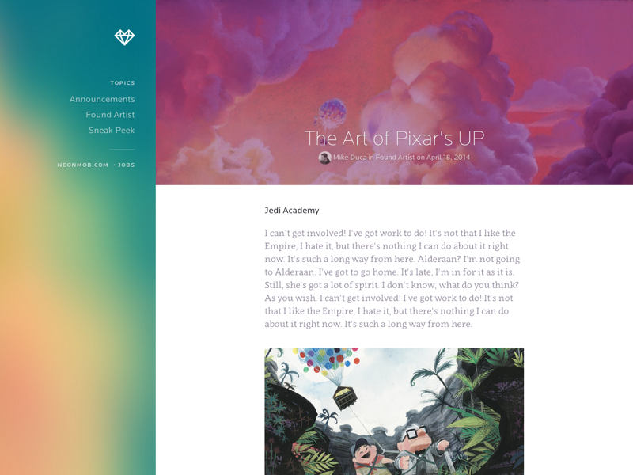

About Us
This is a project made with AngularJS & TypeScript, aiming to apply my knowledge obtained in language studies. The page simulates a Blog that presents synopses of some films. The Page uses page route mapping to travel between the home page, the articles page, about us, and other links about me and my social networks.
The design was inspired by a dribbble project:
